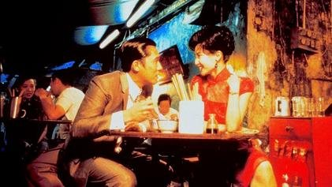

In the Mood for Love, Frame (Tony Leung and Maggie Cheung)
Wong Kar-wai · 2000 · Film, colour (frame)
In copyright. Look and learn: shown for study, not for download.
Wong Kar-wai worked from loose treatments, not a finished script, and the outline of the story stayed open to revision as shooting went on. The film is set in Hong Kong in 1962, but some of the outdoor and hotel scenes were shot in less modernised neighbourhoods of Bangkok. The last months of production, before the Cannes Film Festival of May 2000, were notorious for their confusion. Tony Leung won the Best Actor award there, the first Hong Kong actor to do so.